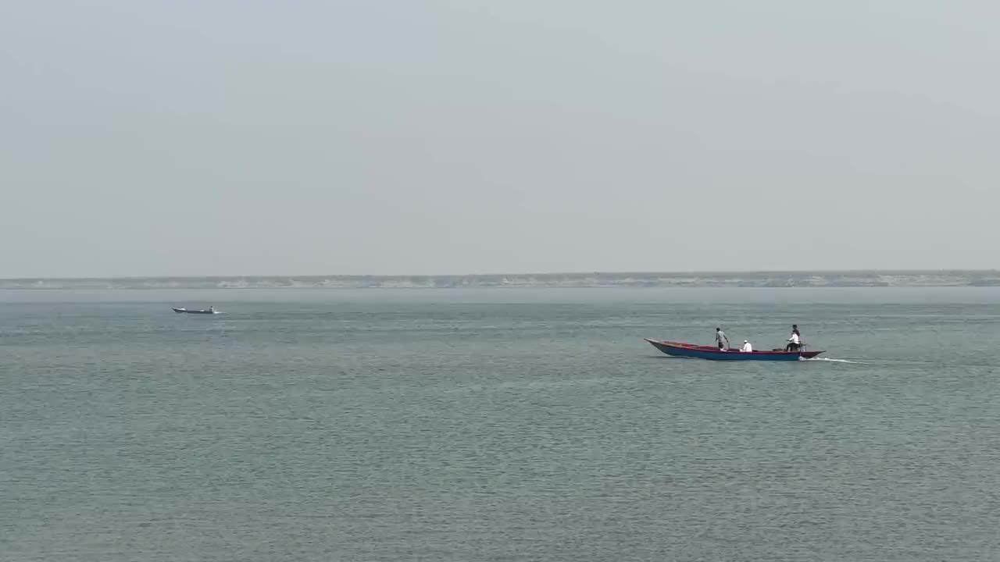

02 / UNDERSTAND THE RIVER RECORDED SCENE
BONNASOTORKO / BANGLADESH
Water moves.
Be ready.
Stay close to official information. Make a household plan before the water rises.
Find official informationএলাকার তথ্য · Area information
No feed is connected. Missing data does not mean there is no flood risk. This site cannot establish safe roads, safe shelter locations or household flood depth.
পুরোনো হাওর বার্তার উদাহরণ · Historical reference
Read a dated BAMIS source and see why an April 2026 bulletin must not be treated as a current warning.
Open the historical bulletin referenceপরিবারের প্রস্তুতি · Household planning
A general planning aid, not an evacuation instruction. Follow current directions from local authorities.